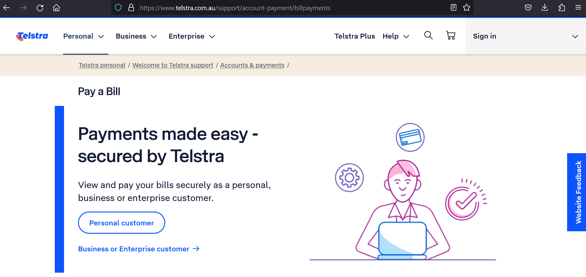
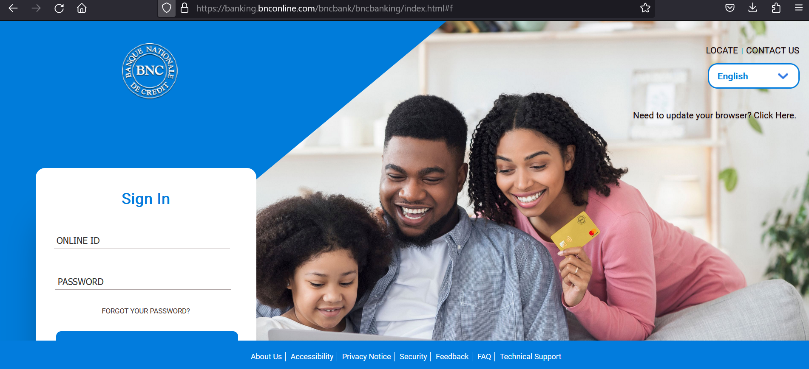
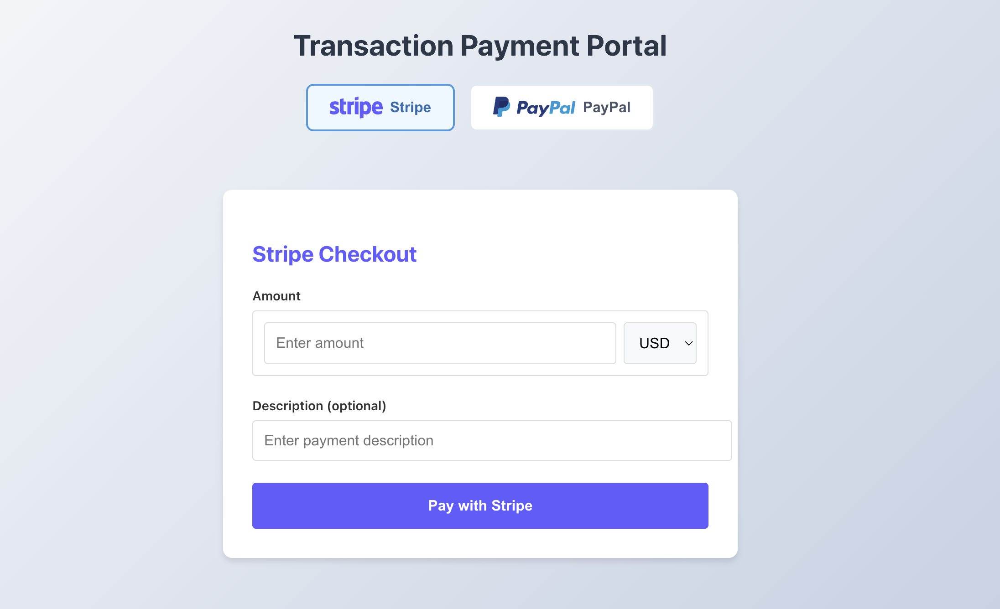
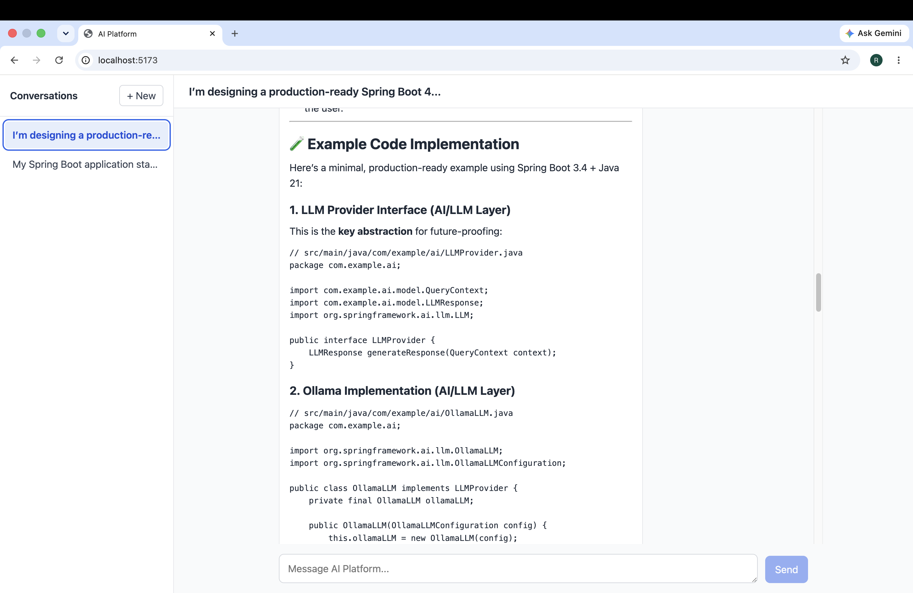

A selection of professional experience and engineering projects
demonstrating backend architecture, financial systems, cloud
security, and distributed application development.

TELCO • WEB DEVELOPMENT • TEAM LEAD
Telco Content Management & Web Development
Team lead for a telecommunications Content Management System,
leading developers and QA professionals responsible for
delivering internal web applications and business workflows.
Responsibilities included translating business requirements
into web solutions, developing backend functionality, processing
application data, and collaborating with designers and
cross-functional stakeholders.
The role combined hands-on engineering with technical leadership,
agile delivery, requirements analysis, and production-oriented
problem solving.

FINTECH • BANKING • BACKEND ENGINEERING
Online Banking System Development
Backend engineering work on an online banking platform,
contributing to authentication, account management, transaction
processing, and integration with external systems.
I also contributed to localization capabilities that enabled the
platform to support users across different regions.
This experience strengthened my understanding of secure
financial workflows, backend development, integration, and
enterprise software delivery.

MICROSERVICES • FINTECH • JAVA
FinTech Core — Financial Microservices Platform
A backend-focused financial platform built with Java 21, Spring Boot, FastAPI, PostgreSQL, Docker, and React.
Current capabilities include user registration and
authentication, financial account management, transaction
workflows, payment initiation, and Stripe and PayPal
integration.
The architecture is being evolved toward AI-assisted financial services, with planned LLM integration and tool calling while keeping financial state and business rules under deterministic backend services.

AI APPLICATIONS • JAVA • SPRING AI • REACT
AI Platform — Conversational AI Application
A full-stack conversational AI application built with Java 21,
Spring Boot, Spring AI, PostgreSQL, Ollama, React, and TypeScript.
The application supports persistent multi-turn conversations,
database-backed message history, Flyway migrations, and reactive
AI response streaming using Spring WebFlux and Spring AI.
The frontend provides progressive response rendering, Markdown
support, syntax-highlighted code blocks, and a developer-focused
conversational experience.